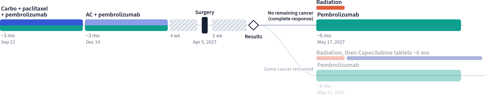
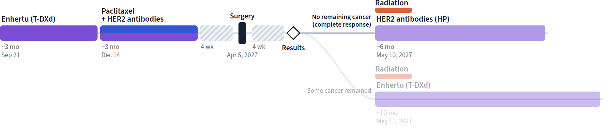
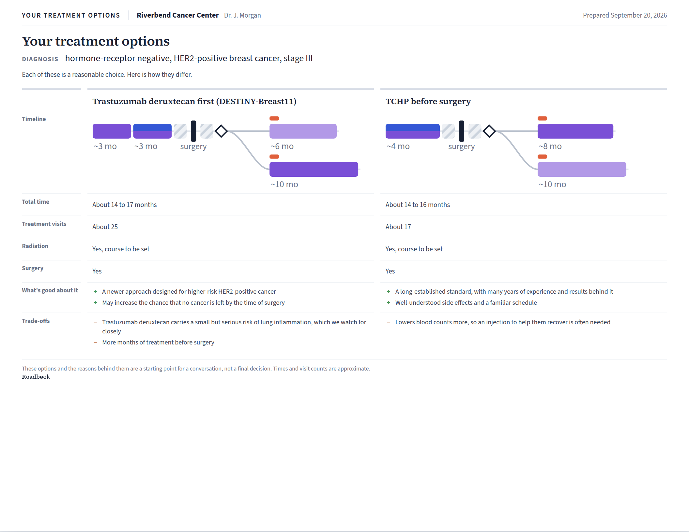

A visual treatment map, created with your oncologist
Cancer treatment unfolds over months. Roadbook turns a treatment plan into a clear visual map, so you can see where you are, what comes next, and where the path may change.
Treatment combines several kinds of therapy in a planned order, and that order can change along the way. A patient can understand today's treatment perfectly and still have no picture of next month. Roadbook makes the whole course visible.

A calendar tells you when. A map shows you where you're going.
A single page showing the major phases of a patient's planned treatment: their order, approximate timing, and the decision points that may change what comes next.
What clinicians prescribe.
When appointments happen.
How the whole journey fits together.
Roadbook is not another patient portal. A portal tells you about appointments, messages, and records. Roadbook shows you the treatment journey itself.
| Patient portal | Roadbook | |
|---|---|---|
| Appointments, messages, records | ✓ | — |
| The whole course on one page | — | ✓ |
| Decision points drawn as forks | — | ✓ |
| Why this plan was chosen for you | — | ✓ |
Surgery, pathology, imaging, and how a person responds can all change what comes next. Roadbook draws those decision points as real forks, leads with the path the team is planning around, and keeps the alternative in view.
Roadbook shows not just what happens next, but what might change the path.

When more than one regimen is reasonable, the decision visit is easier with both on one time scale. Months, visits, and the trade-offs, side by side.

Choose an evidence-reviewed treatment pathway, traced to its trial, with sources one click away.
Adjust cycles, phases, timing, and decision points for the person in front of you. Add why this plan was chosen for them.
Print it on one page, or hand over a QR code that opens the same map on a phone.
Physicians build the map. Patients and families use it. Everything on this site is written for both, because the map only works when both can read it.
Ask your oncologist for your map, or see an example of what one looks like.
The same map is useful anywhere a treatment sequence has to be explained or designed, not only in the clinic room.
Cancer treatment involves multiple phases, multiple specialties, and decisions that change the next step. A visual timeline makes that structure easier to hold than a paragraph, a calendar, or a stack of appointment reminders — and the evidence agrees.
In a 2025 study of visual treatment timelines for cancer patients, timelines improved correct understanding and confidence over spoken information alone; in the clinic, patients comprehended their treatment path well and still recalled it weeks later, and both patients and physicians found the visual aids helpful.
Jambor HK et al. Communicating cancer treatment with pictogram-based timeline visualizations. J Am Med Inform Assoc 2025;32(3):480–491. doi:10.1093/jamia/ocae319In a national survey of US pediatric oncologists, about 95% said software that made treatment calendars easier to create would be useful, and every respondent rated printable output as important.
Mueller EL et al. Perceptions of chemotherapy calendar creation among US pediatric oncologists. Pediatr Blood Cancer 2023. doi:10.1002/pbc.30688I'm a practicing medical oncologist. Most days I sit across from someone who has just learned they have cancer and walk them through a plan that will take the better part of a year.
Treatment has become remarkably effective, and remarkably complicated. We rarely treat a cancer with one method anymore. Chemotherapy, immunotherapy, targeted drugs, surgery, radiation, and hormone therapy are combined and sequenced, and the sequence itself often depends on what surgery or a scan reveals along the way.
In the room, it makes sense. By the time a patient is home, the order is hard to hold onto, and "what happens next?" is the question I hear most.
A roadbook is the guide a navigator uses on a long overland route. The whole journey is drawn out before the first mile: every stretch in order, every turn, and the places where the road forks, so that at any point you can see where you are and what comes next. I wanted something like that to hand a patient. Not a calendar of appointments, but the whole road ahead, drawn out for them, with the forks marked and the reasons behind the plan.
So I built Roadbook.
Allen Li, MD
Medical oncologist, Washington State · About Roadbook
Roadbook doesn't need a name, a record number, or an account. A shared map contains the treatment plan itself, encoded in the link — not an identity.
See how Roadbook turns a complex cancer treatment plan into something a patient and physician can look at together.